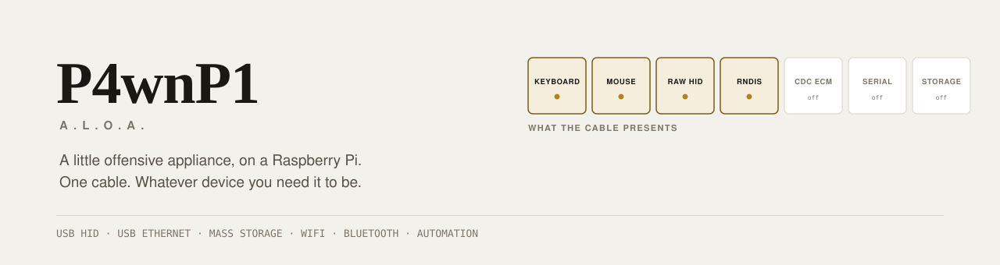

A Raspberry Pi that becomes whatever USB device the job needs.
Keyboard, mouse, network adapter, mass storage, serial — alone or all at once,
reconfigurable from a browser, scriptable, and able to act on its own once the cable is in.
Download an image · The console · Build it yourself · What is not verified
Authorized testing only. This is a red-team tool. Point it only at systems you own or
have written permission to test. See DISCLAIMER.md.
Hardware-verification status. The images below are built from official Raspberry Pi OS
releases and automatically verified before publishing — but they have never been booted on
a physical Pi. Read What is not verified before you rely on this.
Download
Built from v0.2.0, on Raspberry Pi OS Lite (Debian 13 "trixie"), 2026-09-15, kernel
6.18.50+rpt-rpi.
| Image | Size | Boards |
|---|---|---|
P4wnP1-ALOA-v0.2.0-armhf.img.xz |
656M | Pi Zero, Pi Zero W, Pi 1 |
P4wnP1-ALOA-v0.2.0-arm64.img.xz |
592M | Pi Zero 2 W, Pi 3, Pi 4, Pi 5 |
armhf sha256 e87ef407db652e71b1d7b77112a627def080559ac7664b9c31728534a3591d93
arm64 sha256 85b59a6c41f8786f6dca3f8e94c1fab5b90c07c12ee605b1b351e1967746cbc6
Verify, flash, and boot with the cable in the data port (the inner one on a Zero):
sha256sum -c P4wnP1-ALOA-v0.2.0-armhf.img.xz.sha256
xz -d P4wnP1-ALOA-v0.2.0-armhf.img.xz
sudo dd if=P4wnP1-ALOA-v0.2.0-armhf.img of=/dev/sdX bs=4M conv=fsync status=progressThen, over the USB ethernet link the device brings up:
ssh p4wnp1@172.16.0.1 # forced password change on first login
sudo cat /root/INITIAL_CREDENTIALS.txt # console password and WiFi PSK for THIS deviceOpen http://172.16.0.1:8000.
Nothing is shared between devices: the SSH password must be changed at first login, host keys
are generated per device, and the console password and WiFi PSK are random per device. That is
why the first login has to come over USB or serial — the WiFi key is not knowable until you
have read it off the device.
The console

The first thing it shows you is what the cable presents — a live picture of the USB functions
the machine on the other end actually enumerates, each segment carrying its device path or host
address, with the attach state driven by real gadget events.
| View | What it is |
|---|---|
| Cable | USB composition and the identity the device claims — vendor, product, serial |
| Radio | WiFi state, the Bluetooth controller, and the interface table |
| Keystrokes | HIDScript editor, runner, and job control |
| Reflexes | The trigger/action rules the device acts on by itself |
| Loadouts | Whole-device configurations, backup, reboot, shutdown |
| Journal | Everything the device reports, live |
196KB total, 9 files, no framework and no build step — 120KB of that is two variable
webfonts, served from the device because this appliance is routinely operated with no internet
route at all. The smallest supported target is a Pi Zero W: one 1GHz ARM11 core and 512MB of
RAM. Light and dark themes, and all 18 text and UI colour pairings are checked against WCAG AA
in both by make contrast.
What it does
| USB functions | HID keyboard, HID mouse, raw HID, RNDIS, CDC ECM, mass storage (disk or CD-ROM), serial — individually or as one composite device, reconfigurable at runtime |
| HIDScript | 24 functions exposed into a JavaScript VM running on the device; 15 keyboard layouts; human-cadence typing; absolute mouse positioning; LED-state branching; up to 8 parallel jobs |
| DuckyScript | Converts to HIDScript, 66 key names recognised |
| Triggers | 9 event types — USB host attach/detach, AP started, joined WiFi, SSH login, DHCP lease, GPIO, group values |
| Control | 82 RPCs over gRPC and JSON, plus a live event stream |
Existing DuckyScript payloads run here:
P4wnP1_cli ducky convert payload.txt -o payload.js --layout gb --speed 80 --jitter 20DuckyScript 1.0 converts in full. Later Hak5 dialects and Bash Bunny directives are reported as
warnings and left in the output as // UNCONVERTED: comments — a payload that converts
cleanly while silently losing a third of its logic is worse than one that refuses.
Hardware
| Board | Image | Status |
|---|---|---|
| Pi Zero W | armhf |
The classic target. The only board with a Nexmon-patched firmware, so the only one where KARMA and multi-SSID can work. |
| Pi Zero | armhf |
No WiFi or Bluetooth. USB surface only. |
| Pi Zero 2 W | arm64 |
USB, normal AP and Bluetooth all build. No Nexmon for its BCM43436, so no KARMA. |
| Pi 3 / 4 / 5 | arm64 |
On a Pi 4/5 the USB-C port is the one that does peripheral mode. |
Upstream and earlier versions of this README said the Pi Zero 2 W was unsupported and blamed
the WiFi chipset. That was not the reason. The core service was gated to 32-bit ARM by build
tags (+build linux,arm) that turned out to be incidental rather than a genuine dependency —
removing them builds arm64 with no code changes. The chipset only limits KARMA, not the device.
You also need a microSD card (8GB minimum), a USB cable or OTG adapter, and ideally an external
5V supply so the Pi can stay powered while detached from the target.
Building
Everything cross-compiles from macOS or Linux. No Pi required to build.
make build-armv6 # binaries for Pi Zero / Zero W
make build-arm64 # binaries for Pi Zero 2 W / 3 / 4 / 5
make image # flashable .img.xz for both, via Docker
make test # unit tests
make contrast # WCAG check on the console paletteImage building is documented in image/README.md. Every built image is
mounted and verified before it is published: MBR signature, both partitions, that the
partition table fits inside the file, that both filesystems mount, the payload and the console,
that the units are enabled, that config.txt carries the dwc2 overlay and cmdline.txt loads it
as a single line, that root=PARTUUID still matches the disk identifier, that no SSH host keys
were baked in, and that the binaries are the right architecture. A failure refuses to publish.
That check exists because a build once produced 2.6GB of zeros, compressed it to 410KB, wrote a
checksum for it and reported success.
Installing onto a Pi you already have:
sudo ./install.sh --ssid MyAP --wifi-country GBSecurity posture
This is a tool for attacking systems, which makes its own security worth stating plainly.
- The API authenticates. Every gRPC method and every JSON endpoint requires a bearer token.
Tokens are opaque, random, expire on a sliding window, and can be revoked. - Per-device secrets. Nothing meaningful is shared between two flashed devices, and the
access point refuses to broadcast on a PSK published in this repository. - Path handling is allowlisted, and reads are bounds-checked.
- The console is same-origin only. It emits no CORS headers and rejects foreign origins,
because this device is often reached from a browser that is simultaneously visiting untrusted
pages. - Payload text cannot become code. The DuckyScript converter escapes its output so a crafted
payload cannot close the generated JavaScript literal and run as root.
Still open: there is no TLS. The console is served over plain HTTP, so a bearer token rides
in cleartext over whatever link you reach it on. On the device's own WPA2 access point or a USB
cable that is survivable; over anything else it is not. Treat this as a device you reach
directly, not one you expose.
What is not verified
Being specific about this matters more than the feature list.
No physical Raspberry Pi was used at any point.
Verified by automation: both architectures cross-compile and go vet is clean for both;
81 test functions across the auth, JSON-bridge, PSK-guard and DuckyScript packages pass on
linux/arm64; images build from official Raspberry Pi OS releases and pass the mount-and-inspect
check above; the console was exercised in a browser against a mock implementing the real API
shapes — sign-in, all six views, the live event stream, both themes and a phone viewport — with
no console errors.
Not verified at all: that an image boots. That USB gadget mode initialises on real silicon and
a host enumerates the functions. That keystroke injection types correctly into a real machine.
That hostapd brings up the access point. That Bluetooth pairs. That the trigger engine fires on
real events. That any of this survives having the cable pulled out mid-write.
If you are evaluating this for real work, boot it on a Pi first and check those yourself.
KNOWN_ISSUES.md tracks what is fixed and what is still open, including the
cold-boot panic that made every freshly flashed device dead on arrival until this release.
Licence and selling this
P4wnP1 A.L.O.A. is GPL-3.0 (see LICENSE), inherited from
MaMe82's original.
GPL-3.0 permits selling devices with this software on them. What it requires is that every
buyer gets the complete corresponding source for the version on their device, under GPL-3.0,
including your modifications, and that you do not add restrictions on their right to use, modify
and redistribute it. You cannot keep changes to this codebase proprietary while shipping them.
In practice the viable commercial shape is hardware, assembly, support, documentation, training
and engagement services — not licence fees for the code. If you intend to build a business on
this, get the position reviewed by someone qualified; the paragraph above describes what the
licence says, it is not legal advice.
Documentation
- INSTALL.md — installing onto an existing Raspberry Pi OS
- image/README.md — building flashable images
- docs/TUTORIAL.md — HIDScript, the CLI, and trigger actions
- KNOWN_ISSUES.md — the defect backlog, prioritised
- CHANGELOG.md — what changed and why
Credits
Created by MaMe82 (Marcus Mengs), whose design — the composite
gadget, HIDScript, and the trigger/action engine — is what this is. Maintained upstream at
RoganDawes/P4wnP1_aloa. Kali Linux ship a prebuilt
image for the Pi Zero W.
This fork modernises the toolchain, adds authentication, a JSON API, arm64 support, a new
console, DuckyScript conversion and a verified image pipeline — and fixes the reason a flashed
device never worked.
Fraunces for identity and figures · Inter for interface text · system monospace for measured values
Warm paper with two golds; dark mode is true black